Wentao (Tony) Ma
@ Luma AI
|
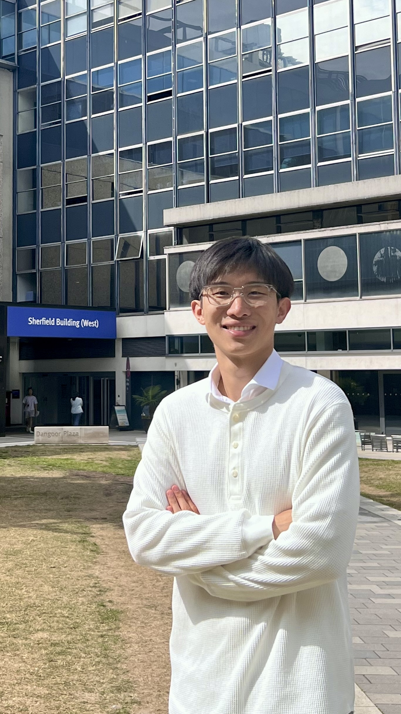 |
Introduction
The research area I'm focusing on is multi-modal models. I enjoy improving and exploring the abilities of MLLMs and applying them to other fields like robotics.
Currently, I'm doing research on physical foundation models at LumaAI, where I mainly work on pre/mid-training. Before that, I worked at @BosonAI with Alex Smola and Mu Li on post-training for audio foundation models like Higgs-tts-2, -2.5, and Higgs-realtime.
Earlier, I got my Master's degree from the University of Toronto, advised by Dr. Zhijing Jin. In the meantime, I worked closely with Wenhu Chen on video understanding. I also studied at Imperial College London, supervised by Edward Johns, where we validated and improved the multi-modal pattern learning ability of VLMs and applied them to robotics.
I like photography and I'm a member of Toronto Photo Walks (ToPW). I'm also interested in all kinds of sports, including snowboarding and tennis.
News
- [09/2026] I join LumaAI as a Research Scientist / Engineer!
- [08/2026] Voice is gonna be the universal interface. Come and check out Higgs-Realtime!
- [07/2026] Happy to share our WildASR and Instruct-FD are both accepted by COLM.
- [06/2026] Check out our new IHBench benchmark.
- [05/2026] Glad to share that VideoEval-Pro has been accepted by TMLR.
- [03/2026] Happy to share the new WildASR benchmark.
- [02/2026] BosonAI released the new Higgs-Audio-v3 STT model.
- [01/2026] BosonAI released the new Higgs-Audio-v2.5 TTS model.
- [12/2025] Happy to share that StructEval has been accepted by TMLR 2025.
- [10/2025] We publish VideoScore2, a multi-dimensional and interpretable framework for synthesized video evaluation.
- [08/2025] Happy to share that ProT-GFDM has been accepted by Computational and Structural Biotechnology Journal!
- [07/2025] Boson's Higgs-Audio-V2 is out, check it out!
- [06/2025] Happy to share that Vamba has been accepted by ICCV 2025.
- [05/2025] Happy to share the structural generation benchmark 'StructEval' is published!
- [05/2025] We publish VideoEval-Pro, a more realistic and robust long video understanding benchmark.
- [05/2025] I join @BosonAI as a Machine Learning Engineer!
- [04/2025] We publish ProT-GFDM, a generative fractional diffusion model for protein generation.
- [03/2025] We publish Vamba, an Efficient Long-Video understanding model.
- [01/2025] I become a Machine Learning Associate @ Vector Institute!
- [10/2024] I graduate from the MSc Computing program @ Imperial with Distinction!
- [09/2024] We introduce Paint2Plan, a VLM method enabling imitation learning in Robotics.
- [06/2024] I present the 'LLM Echo Chamber' project at MLCSS @ Imperial.
- [08/2023] I become an AWS Certified Solutions Architect!
- [05/2023] I finish my graduation design at Beihang University with a paper published.
- [01/2023] I finish my internship on the Multi-Object Tracking project at Sony.
- [06/2022] I join TikTok as an intern.
Works
|
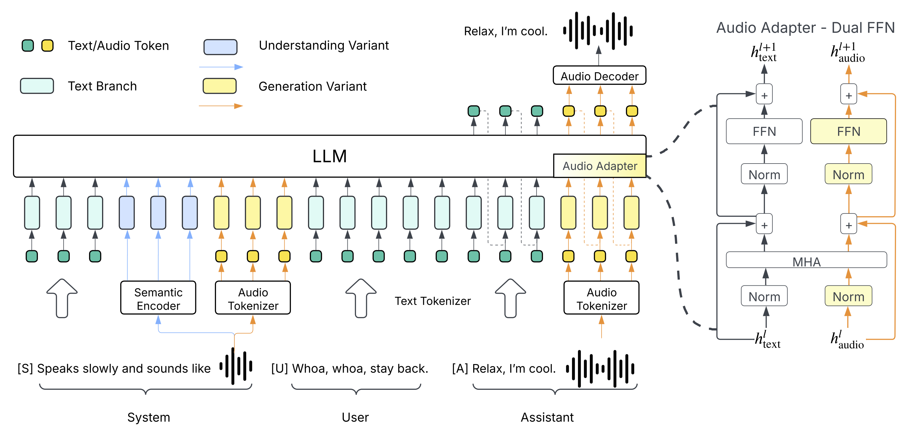 |
Higgs Audio-LLM Family Core Contributor, Boson AI Team, 2025-2026 |
|
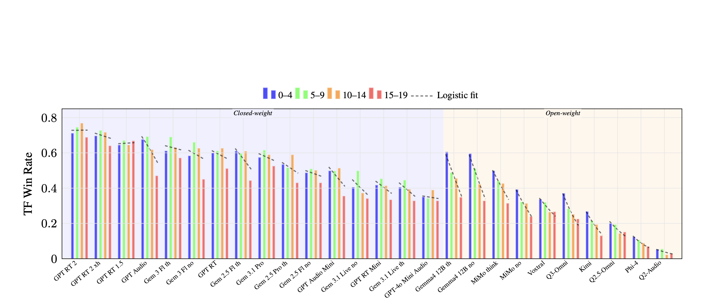 |
IHBench: Evaluating Post-Interruption Recovery in Voice Agents with Structured Workflows Ahmad Salimi, Wentao Ma, Yuzhi Tang, Dongming Shen, Mu Li, Alex Smola Preprint |
|
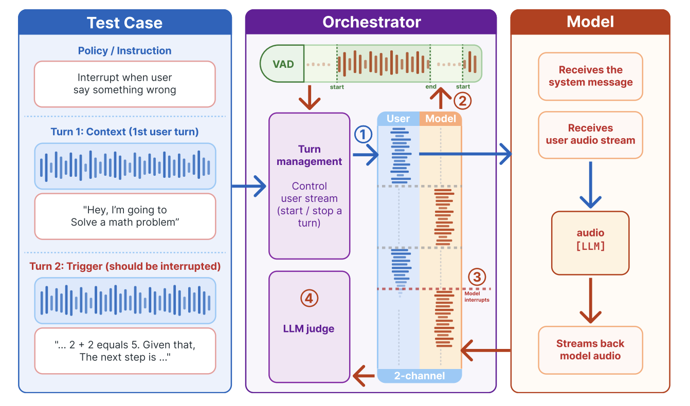 |
Instruct-FD: Can Your Full-Duplex Speech System Follow Turn-Taking Instructions? Yuzhi Tang, Wentao Ma, Xiling Zhao, Ahmad Salimi, Sepehr Harfi Moridani, Dongming Shen, and others Conference on Language Modeling (COLM), 2026 |
|
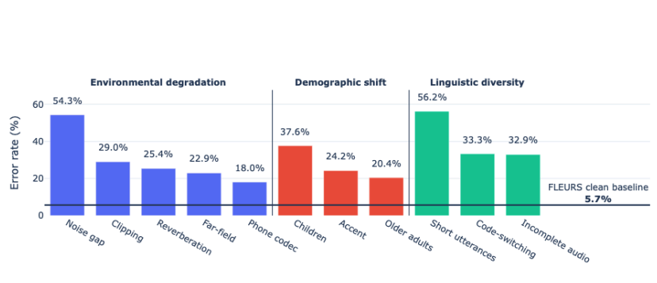 |
Back to Basics: Revisiting ASR in the Age of Voice Agents Geeyang Tay*, Wentao Ma*, Jaewon Lee, Yuzhi Tang, and others Conference on Language Modeling (COLM), 2026 |
|
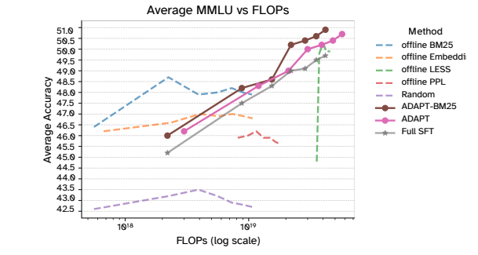 |
Rethinking Data Curation in LLM Training: Online Reweighting Offers Better Generalization than Offline Methods Wanru Zhao, Yihong Chen, Yuzhi Tang*, Wentao Ma*, and others International Conference on Learning Representations (ICLR), 2026 |
|
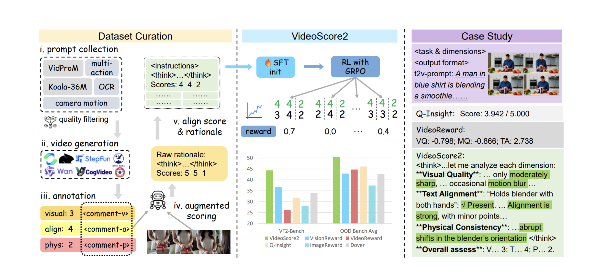 |
VideoScore2: Think before You Score in Generative Video Evaluation Xuan He*, Dongfu Jiang*, Ping Nie, Minghao Liu, Wentao Ma, Junru Lin, and others Transactions on Machine Learning Research (TMLR), 2026 |
|
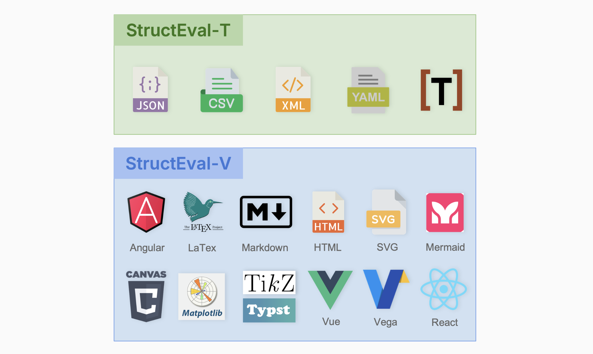 |
StructEval: Benchmarking LLMs' Capabilities to Generate Structural Outputs Jialin Yang*, Dongfu Jiang*, Lipeng He, Sherman Siu, Wentao Ma, Zhiheng Lyu, and others Transactions on Machine Learning Research (TMLR), 2025 |
|
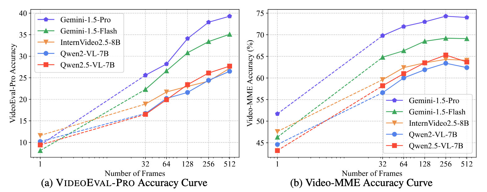 |
VideoEval-Pro: Robust and Realistic Long Video Understanding Evaluation Wentao Ma*, Weiming Ren*, Yiming Jia, Zhuofeng Li, Ping Nie, Ge Zhang, Wenhu Chen Transactions on Machine Learning Research (TMLR), 2026 |
|
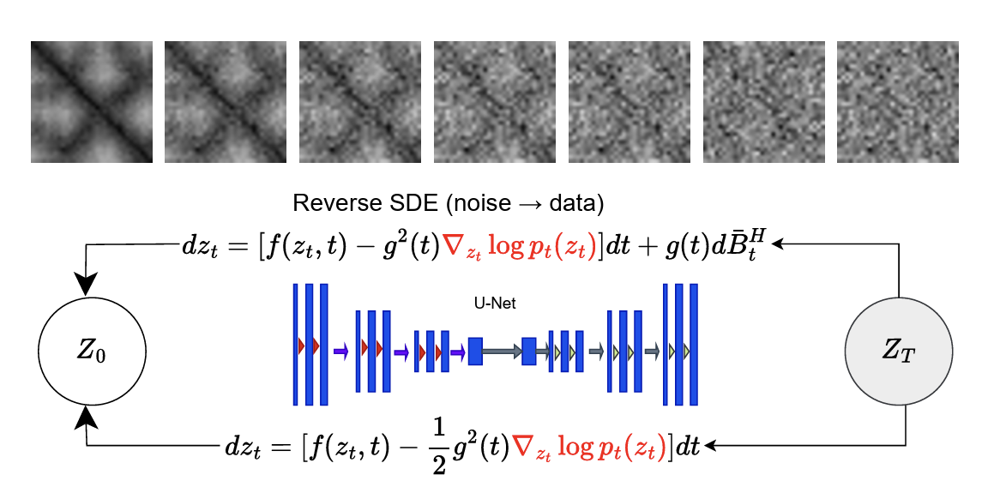 |
ProT-GFDM: A Generative Fractional Diffusion Model for Protein Generation Xiao Liang*, Wentao Ma*, Eric Paquet, Herna Lydia Viktor, Wojtek Michalowski Computational and Structural Biotechnology Journal (CSBJ), 2025 |
|
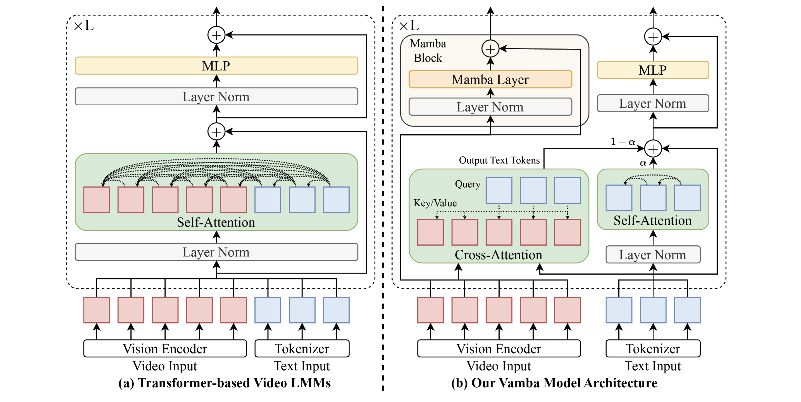 |
Vamba: Understanding Hour-Long Videos with Hybrid Mamba-Transformers Weiming Ren, Wentao Ma, Huan Yang, Cong Wei, Ge Zhang, Wenhu Chen International Conference on Computer Vision (ICCV), 2025 |

|
Paint2Plan: Image Painting Enables Imitation Learning with VLMs Tony Ma, Teyun Kwon, Edward Johns Preprint, 2024 |
|
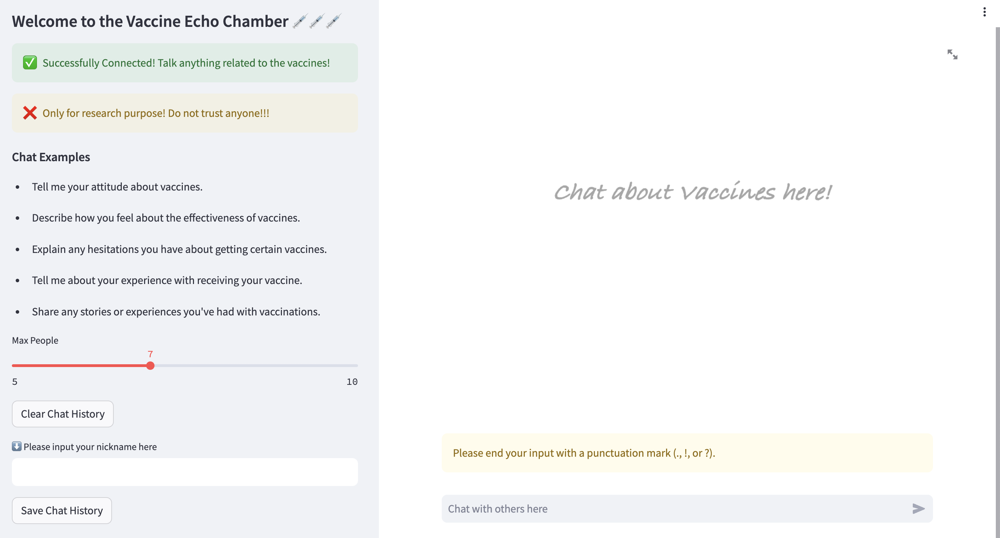 |
LLM Echo Chamber: personalized and automated disinformation Tony Ma, Yves-Alexandre de Montjoye Machine Learning and Cyber Security Symposium (MLCSS), Imperial, 2024 |
|
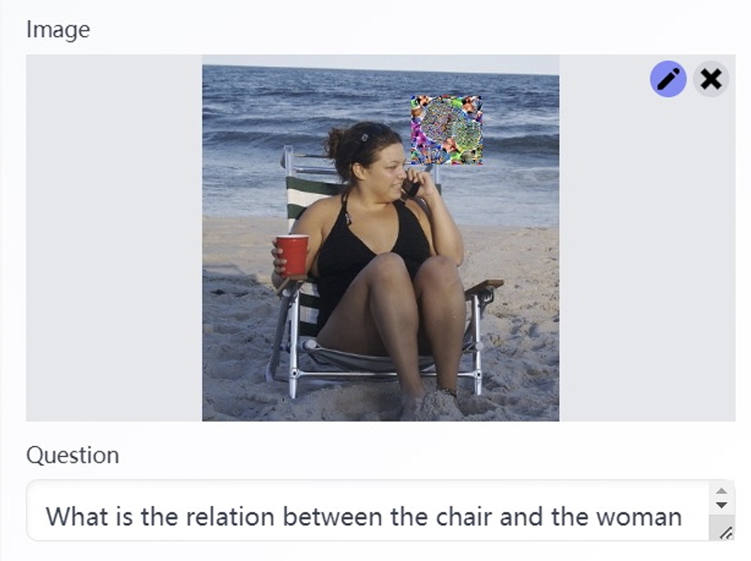 |
Boosting Transferability of Adversarial Patches with Visual Relations Tony Ma, Songze Li, Yisong Xiao, Shunchang Liu Conference on Computer Vision and Pattern Recognition (CVPR), AdvVision Workshop, 2023 |
Experience
|
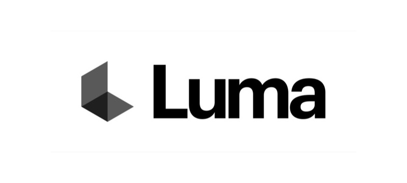 |
Luma AI Research Scientist / Engineer Working on pre/mid-training for physical foundation models Sep.2026 - Present [website] |
|
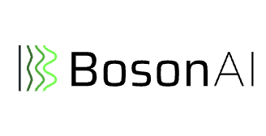 |
Boson AI Machine Learning Engineer Post-training for Audio Understanding and Generation models May.2025 - July.2026 [website] |
|
Vector Institute Machine Learning Associate Designed a Geo-filtering RAG system with Global Spatial Technology Solutions (GSTS) Jan.2025 - Apr.2025 [website] |
|
|
SONY Edge AI Engineer Intern Video Object Tracking / Model Quantization / Edge Computing |
|
|
TikTok Software Engineer Intern iOS development for TikTok Pay May.2022 - Aug.2022 [website] |
|
Selected Certifications and Awards
| UofT MScAC Graduate Spotlight --- 2026 |
| AWS Certified Solutions Architect (Associate) --- 2026 |
| Mitacs Research Funding --- 2025-2026 |
| Distinction @ Imperial College London --- 2024 |
| Outstanding Graduates --- 2023 |
| Scholarship for Academic Excellence --- 2020/2021/2022 |
| Scholarship for Discipline Competitions --- 2020/2021/2022 |
| Excellent Student Leader --- 2020 |
Community Service
| Reviewer: AAAI, COLM, RA-L, ICLR workshops, CVPR workshops |

© Wentao Ma | Template from Dr. Yueming Jin | Last updated: Sep 2026